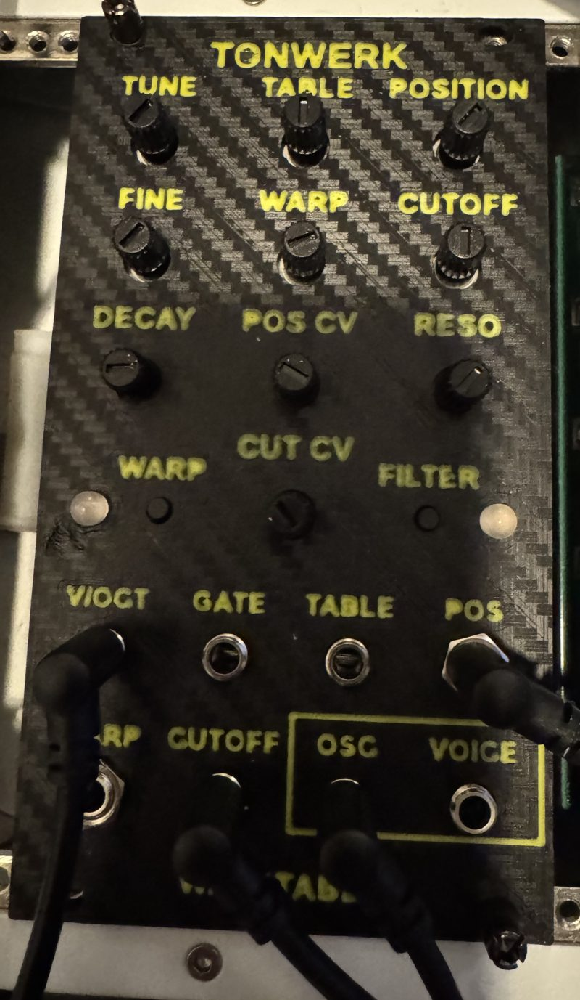

Tonwerk Wavetable as a Eurorack module
The sound engine of the plugin Tonwerk Wavetable on an ESP32-S3, as a 14 HP Eurorack module to build yourself. One monophonic voice: two wavetable oscillators with warp, unison and sub, a multimode filter with drive and an envelope. Built for basses that growl.

Everything needed to build it is open: boards (KiCad), front panel and knobs to print, firmware as a ready-made file. The parts cost about €60–80 plus the boards. The main board also comes as an SMD variant that the manufacturer assembles (never built yet).
Overview
- The same ten wavetables as the plugin, computed from the same formulas, 64 steps each to sweep through. Warp modes sync, bend, PWM and FM, a second oscillator, unison with up to four voices, a sub one or two octaves down.
- Filter as in the plugin: lowpass 12 and 24 dB, highpass, bandpass, notch, comb, with drive in front.
- Two outputs: OSC is the bare oscillator (like a VCO, for an external filter), VOICE the same voice through filter and envelope.
- Six inputs: V/OCT, GATE and CV for table, position, warp and cutoff.
- Everything with ten knobs and two buttons; what does not fit on the front lies in two hidden layers under the buttons.
- 14 HP, about 45 mm deep. Current estimated at about 110 mA on +12 V and about 10 mA on −12 V, no +5 V from the bus.
So far one module has been built (the through-hole boards v0.1). Tested: power, flashing, sound at the VOICE output, the knobs. Not yet tested on the hardware: the CV inputs and the V/Oct calibration.
Operation
The front from top to bottom: nine knobs in three rows, below them the WARP button with LED 1 on the left, the CUT CV knob in the middle, the FILTER button with LED 2 on the right, then two rows of jacks. The two outputs OSC and VOICE are framed at the bottom right.
The three layers
Every knob has up to three jobs:
- Normal: nothing pressed. What the front says.
- WARP button held: oscillator B, unison and sub.
- FILTER button held: envelope and filter extras.
Hold the button, turn the knob, let go of the button. The module saves the hidden values and the modes 3 seconds after the last change; after switching off, everything is back.
Pick-up: why a knob sometimes does nothing
After a layer change a knob is rarely where the other layer's value is. So that nothing jumps, it only takes over once it reaches or crosses the stored value. Until then turning does nothing; once past the value, the value follows the knob. This works both ways: if you turned a knob in a hidden layer, after letting go you first have to bring it back to its old value in the normal layer too.
All knobs
| Knob | Normal | WARP held | FILTER held |
|---|---|---|---|
| TUNE | Tuning ±2 octaves in semitones | Oscillator B: transpose ±24 semitones | Attack 0.5 ms to 2 s |
| FINE | Fine tuning ±50 cents, a small range at 0 around the centre | Oscillator B: fine tuning ±50 cents | – |
| TABLE | Table, ten of them (list below) | Oscillator B: table, fully left = B off | – |
| POSITION | Position in the table (the sound morphs from left to right) | Oscillator B: position | Filter keytracking 0–100 % |
| WARP | Amount of the warp mode | Unison 1–4 voices per oscillator | – |
| CUTOFF | Filter frequency 20 Hz to 20 kHz | Unison detune 0–100 cents | Envelope to cutoff, 0–6 octaves |
| RESO | Resonance (with the comb: feedback) | Sub level, fully left = off | Drive before the filter |
| DECAY | Decay and release, 5 ms to 5 s | Sub: −1 oct. sine, −2 oct. sine, −1 oct. square, −2 oct. square | Sustain 0–100 % |
| POS CV | Attenuverter for the POS jack: centre 0, right full, left inverted | – | – |
| CUT CV | Attenuverter for the CUTOFF jack: centre 0, right 1 V/octave, left inverted | – | – |
From the factory (and after every flash) oscillator B is off, unison one voice with 20 cents of detune for later, the sub off, attack 0.5 ms, no keytracking, no envelope on the cutoff, no drive and sustain 100 %. The warp mode is off, the filter LP24.
The buttons
- Short press
- Under 0.3 seconds and without turning a knob: WARP steps the warp mode, FILTER the filter mode. The button acts on release.
- Hold
- Longer than 0.3 seconds, or shorter but with turning: opens the hidden layer, the mode stays. A knob that is only touched lightly while pressing does not count as turning.
- Hold both while powering on
- Starts the V/Oct calibration.
Warp modes (short press on WARP, LED 1)
The mode applies to both oscillators; the WARP knob and the WARP jack set the amount.
| LED 1 | Mode | What it does |
|---|---|---|
| grey | off | The table sounds as it is. |
| cyan | Sync | Reads the table 1 to 8 times per period and starts every period anew: the hard sync sound that “sings” when you turn it. |
| yellow | Bend | Bends the phase: the start of the period is read faster, the end slower. Brighter, nasal. |
| magenta | PWM | Reads the whole table in an ever shorter part of the period (down to 5 %) and holds the start value for the rest: like pulse width for any table. |
| red | FM | Oscillator B modulates A's phase (and A B's). B need not be audible for this: if it is off, it runs silently as a modulator, and its TUNE in the WARP layer sets the ratio. At full amount it quickly turns into noise. |
Filter modes (short press on FILTER, LED 2)
| LED 2 | Mode | What it does |
|---|---|---|
| cyan | LP12 | Lowpass 12 dB/octave, soft. |
| blue | LP24 | Lowpass 24 dB/octave, the classic bass. Factory default. |
| yellow | HP12 | Highpass 12 dB/octave. |
| green | BP12 | Bandpass. |
| magenta | Notch | Notch filter, takes out a band. |
| red | Comb | Comb filter tuned to the cutoff's period, RESO is the feedback: metallic, with resonance almost a string. |
| grey | off | No filter, only the envelope. |
Drive (FILTER layer, RESO) saturates softly before the filter, up to about 24 dB of gain, level-compensated. The sub joins only after the filter, so the bass stays clean while the filter moves.
The ten tables
While you turn TABLE, LED 1 shows the table for a second as a colour from the colour wheel, then the warp mode again. POSITION sweeps every table from left to right:
| No. | LED 1 | Table | POSITION from left to right |
|---|---|---|---|
| 1 | red | Basic | Sine, triangle, saw, square, crossfaded into each other |
| 2 | orange | Sync | Saw with sync, its frequency rising to eight times |
| 3 | yellow-green | PWM | Pulse from square to thin needle |
| 4 | green | Vowel | A sung voice through the vowels a, e, i, o, u |
| 5 | turquoise | FM growl | Two-operator FM, modulator an octave up, index up to 8: the growl |
| 6 | cyan | Folder | A sine driven ever harder into a wavefolder |
| 7 | blue | Harmonic | Fundamental plus a band of overtones that climbs eight octaves |
| 8 | indigo | Comb | Saw with notches that close, at the end only the even harmonics |
| 9 | violet | Bitcrush | Saw and sine in ever fewer steps |
| 10 | pink | Rough | Saw with a sine below, saturated ever harder and lopsided |
What else the LEDs show
While playing, both light up with the envelope: bright while a note sounds, dimmed (never fully dark) in between, so the mode can always be read.
- Yellow and cyan, briefly
- The module is starting.
- Red and yellow, for up to a minute
- First start after flashing a new table version: the module computes the tables and stores them in flash. No sound, do not switch off.
- Both blink red
- Not enough PSRAM: the DevKit is not an N16R8.
- One blinks white
- Calibration, the module is waiting for this button.
- Both blink green or red three times
- Calibration saved or discarded.
Jacks
| Jack | Range | What it does |
|---|---|---|
| V/OCT | −1 to +7 V | Pitch, 1 V per octave, 0 V = C2. Adds to TUNE and FINE. |
| GATE | from about 1.4 V | Starts the envelope; when it falls, the release begins. Without a cable the gate is permanently on: the module plays as a drone. |
| TABLE | ±5 V | Shifts the table, +5 V sweep from fully left through all ten. |
| POS | ±5 V | Shifts the position, through the POS CV attenuverter. |
| WARP | ±5 V | Adds to the warp amount, +5 V = full. |
| CUTOFF | ±5 V | Shifts the cutoff through the CUT CV attenuverter; to the right 1 V per octave, so the filter follows the pitch with the V/Oct signal. |
| OSC (output) | ±5 V | Oscillators A and B with unison, warp and sub, without filter and envelope: a VCO, always sounding. |
| VOICE (output) | ±5 V | The same through drive and filter, the sub added after it, then through the envelope as a VCA. |
The outputs are at module level. They are far too loud for headphones; always go through a mixer or an output module.
First patches
- Drone
- Only VOICE to the mixer. Without a gate cable the module sounds at once. Choose a TABLE, turn POSITION and WARP slowly, CUTOFF and RESO along with them.
- Bass from the sequencer
- Pitch to V/OCT, gate to GATE, VOICE to the mixer. DECAY short; in the FILTER layer: sustain (DECAY) down, envelope to cutoff (CUTOFF) at two to three octaves; CUTOFF low in the normal layer. For more punch, add the sub (RESO) in the WARP layer.
- Wobble
- An LFO into the CUTOFF jack, CUT CV to the right, LP24 and some RESO. With a second LFO into POS and the FM growl table it becomes dubstep.
- Fat lead
- WARP layer: unison (WARP) at 3 or 4, detune (CUTOFF) at 20 to 40 cents, oscillator B (TABLE) with a second table, B's TUNE an octave up.
- External filter
- Use OSC instead of VOICE: the raw oscillator for another filter module and a VCA.
Calibrating V/Oct
For V/OCT to track over several octaves, the module measures two voltages once. For that it needs a source that delivers exactly 1.000 V and 3.000 V (a bench power supply and a multimeter will do; a MIDI-to-CV interface works too if you measure which notes give exactly 1 V and 3 V).
- Switch off. Unplug every cable except the one for V/OCT: the other inputs are measured as 0 V meanwhile.
- Hold both buttons and switch on. LED 1 blinks white.
- Exactly 1.000 V into V/OCT, press WARP. The module measures for half a second, then LED 2 blinks white.
- Apply exactly 3.000 V, press FILTER.
- Three times green: saved, the module starts normally. Three times red: the measurement was implausible (cable, voltage?), the old values stay; start over.
Afterwards check with a tuner across several octaves. Without calibration the module uses the circuit's nominal values; how well they track depends on the parts.
New firmware
The firmware is one file, tonwerk-modul.bin, written at address 0x0 with Espressif's web flasher in the browser (Chrome or Edge). How is described in the build guide, step 8. This works in the rack or loose on the USB cable.
Flashing erases the saved modes, the hidden values and the calibration; the tables stay. So calibrate again after an update.
Problems
- A knob does nothing
- It has not reached its value yet (pick-up). Turn it once across the whole range.
- A button does not respond
- Press briefly and release, without turning a knob meanwhile. Longer than 0.3 seconds counts as holding.
- No sound at the VOICE output
- If a cable is in GATE but no gate arrives, the envelope stays closed. Pull the cable (drone) or send a gate. Sustain 0 and a short DECAY also turn a drone into silence. If OSC sounds but VOICE does not, the cutoff is fully down or a highpass fully up.
- Noise
- FM or sync at full amount sound like that. Turn WARP back or change the mode (LED 1 grey = off).
- Out of tune across octaves
- Calibrate, and check FINE at the centre and TUNE.
- What is the module doing right now?
- Over USB (115200 baud, for example in the web flasher's console) it reports start-up messages, the calibration and every 5 seconds the load of the audio core.
As of 28 October 2026. Source code, boards and front panel are on GitHub under the same PolyForm Noncommercial License as the plugins: building one for yourself yes, selling only with permission.